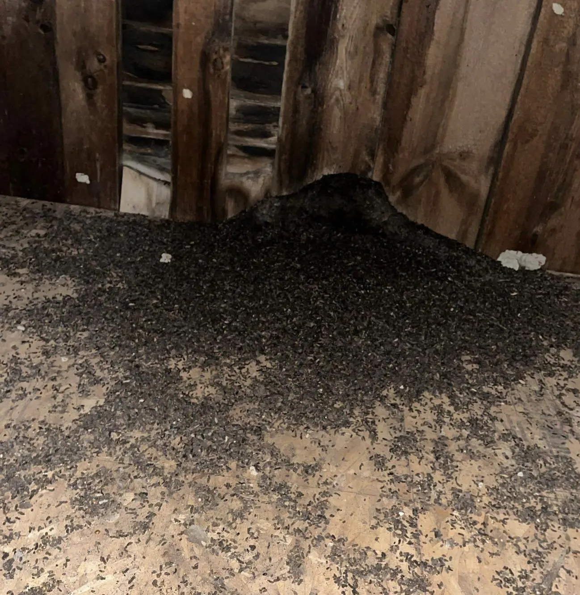

Bats in Attic.
Careful. Lawful.
Bats in attics and wall voids need a season-aware, exclusion-first approach. We inspect, explain timing, and seal — without shortcuts.
Signs of bats in the attic
Bats are quiet tenants. Most homeowners do not see the colony — they hear it, smell it, or find what it leaves behind. These are the signs an inspection looks for, and the signs worth noting before you call.
- Droppings (guano) in the attic, usually piled below one roost point
- A sharp, musty odor near the attic hatch, a closet, or an upstairs wall
- Brown staining or rub marks around a roofline gap, vent, or chimney joint
- Chirping, scratching, or rustling in a wall void or the attic at dawn or dusk
- Bats leaving the roofline at dusk — note the exit point, not just the count
- A single scratching sound that moves — one bat in a wall void is a different problem from a colony overhead
Tell us which sign you have — a sighting, a sound, a smell, or droppings — and where. The inspection starts from there.

How bats use a house
The species most often found in Finger Lakes attics is the big brown bat. It roosts in warm, dark, undisturbed spaces — attics, wall voids, and the gaps behind fascia and soffits — and it returns to a roost that works, season after season. A colony is not passing through. It has chosen the building.
Entry takes very little. A bat can use an opening about three-eighths of an inch wide, roughly the thickness of a pencil. Roofline joints, chimney flashing, vent edges, and trim that has shrunk or shifted over the years all qualify. On an older house there are usually several candidate gaps, and a colony may use more than one. That is why bat work starts with a full entry map rather than a single hole.
Bats feed at night — over water, fields, and streetlights — and raise their young in the roost through the summer. The colony’s calendar sets when exclusion can happen. That timing is set out below.
The bat season, in brief
Spring and summer are maternity season: the colony is in the attic, and the young are born and raised there. From roughly May through mid-August those young cannot fly, and exclusion waits — trapping a flightless pup inside by sealing its exit helps no one. Late summer and autumn are the working window for most colonies: the young are flying, the whole colony leaves at dusk, and one-way exits can empty the roost. Winter is quieter and less certain — big brown bats may hibernate inside the structure rather than leave, so a silent attic in January is not proof of an empty one. The inspection reads the season as well as the building, and the plan follows both.
What we do
- Inspection — the roost located, the entries mapped, the secondary gaps noted
- Exclusion plan — what can be sealed now and what waits for the season, set out in writing
- One-way exits — devices fitted at the active entries so bats leave at dusk and cannot return
- Sealing — every entry closed once the roost is confirmed empty
- Monitoring — a follow-up check that the roost stays empty and the seals hold
Exclusion is the method because it is the one that ends the problem. A colony removed without sealing is a colony again next season — the bats navigate by memory and return to the same entries. The seal list, not the exit count, is the measure of the job.
Timing restrictions apply. Bat work has timing restrictions that are explained before work. We will tell you what can be done now, what must wait, and why — before any work begins. As general guidance, exclusion in New York is scheduled around the maternity season — roughly May through mid-August — when the young cannot yet fly.
What we seal
Roofline gaps, gable peaks and ridge lines, soffit and fascia openings, vent and chimney penetrations, chimney flashing joints, and siding and trim gaps. On older rooflines the sealing is carpentry-grade work — the material has to sit on joints that are not square anymore. Every sealed entry is documented in writing: what was sealed, and with what.
What you get in writing
The findings from the inspection, the entry map, the exclusion plan and its timing, the list of seals and the materials used, and the monitoring result. Where guano has built up, the cleanout and disinfection options for the affected area are set out as a separate step — restoration follows exclusion, never precedes it. See Attic Restoration →.
Prevention
Once a colony is out, prevention is mostly maintenance. Trim and flashing kept in repair close the gaps bats look for. Vent openings stay screened. Attic access points stay shut. Bats choose buildings with open entries and quiet roosts; a sealed roofline removes the invitation. If bats are seen at the roofline again at dusk, note the exit point and call — a small entry found early is a smaller job.
Wildlife removal vs. pest control
People often search for pest control when they find bats or squirrels, but this is wildlife work, not a spray treatment. No treatment fixes an open entry, and these animals are handled under wildlife rules, not pesticide labels. RodentX is a wildlife company: inspection, humane removal, and exclusion — the seal — are the service. If your problem is an animal in the building, this page is the right one.
Bat removal by city
Bat work is local — the housing, the roofline, and the season in each city. Dedicated city pages: Bat Removal in Auburn → · Bat Removal in Ithaca → · Bat Removal in Geneva →